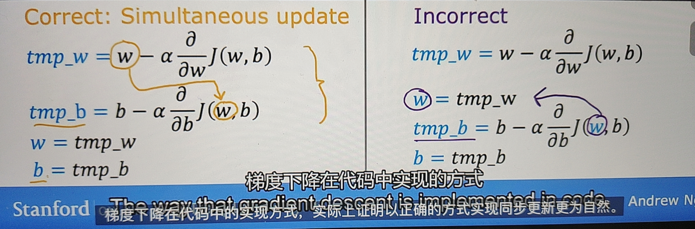

Course1
监督学习：输入特征x，输出目标y。对数据集进行预测，分为回归和分类
无监督学习：输入特征x，没有目标y，对数据集进行聚类预测
线性回归
yi=wxi+b
定义损失函数（成本函数），需要最小化损失函数
J(w,b)=2m1∑i=1m(yi−y^)2
其中yi为真实输出，y^为预测输出
梯度下降
需要最小会损失函数，需要使用梯度下降算法
定义学习率learning_rate为α,一般α⊆[0,1]
w=w−α∂w∂J(w,b)
b=b−α∂b∂J(w,b)

如果α太小，可以得到答案，但是时间过长
如果α太大，大交叉无法收敛，甚至发散
当参数值每次更新时，J(w,b)变小，导数项（斜率）也会变小，对于固定学习率α，步长也会变小，从而达到局部最优解
对导数项分别求导
∂w∂J(w,b)=m1∑i=1m(f(xi)−yi)xi
∂b∂J(w,b)=m1∑i=1m(f(xi)−yi)
其中f(xi)=wxi+b
对于线性回归损失，他的损失函数图像是一个凸函数，只有一个全局最小值，没有局部最小值
选择合适得到学习率，就可以得到min(J(w,b))
多元线性回归
假设特征有n个，定义x=[x1x2x3...]，参数w=[w1w2w3...]
则fw,b=w⋅x+b
·为两个向量的点积(dot)。w⋅x=w1∗x1+w2∗x2+....+wn∗xn
矢量化：代码简洁、运行速度快
PS: 正规方程：某些机器学习库在后端求w,b的方法，只适用于线性回归，而且速度慢，不要求掌握
特征缩放
加快梯度下降速度
避免特征的取值范围差异过大，将其进行缩放
选择合适学习率：从0.001开始，每次乘以3，对比J(w,b)与迭代次数的关系，选择合适的α
特征工程
利用直觉设计新特征，通常通过转化与组合，使模型做出更准确的预测
多项式回归：可以添加xq项更好地拟合数据图像，f(x)=w1x3+w2x2+w1x1+b
分类-逻辑回归
解决二分类问题
sigmoid函数
输出介于(0,1)
g(z)=1+e−z1,z⊆R
fw,b(x)=g(w⋅x+b)=1+e−(w⋅x+b)1
决策边界
以0.5作为阈值，当w⋅x+b≥0，取值1；当w⋅x+b<0，取值0
w⋅x+b=0称为决策边界
也适用于多项式回归
成本函数
如果使用平方误差成本函数，有多个局部最小值，J(w,b)是不是凸函数，不适用于逻辑回归
定义J(w,b)=m1∑i−1mL(fw,b(x(i),y(i))
其中
L(fw,b(x(i),y(i))=−log(fw,b(x(i)))ify(i)=1
L(fw,b(x(i),y(i))=−log(1−fw,b(x(i)))ify(i)=0
简化成本函数
L(fw,b(x(i),y(i))=−y(i)log(fw,b(x(i)))−(1−y(i))log(1−fw,b(x(i)))
得到
J(w,b)=−m1(y(i)log(fw,b(x(i)))+(1−y(i))log(1−fw,b(x(i))))
使得成本函数是凸函数，便于实现梯度下降
梯度下降
对导数项分别求导
∂w∂J(w,b)=m1∑i=1m(f(xi)−yi)xi
∂b∂J(w,b)=m1∑i=1m(f(xi)−yi)
其中f(xi)=1+e−(w⋅x+b)1
可以使用相似方法进行特征缩放
过拟合问题
过拟合虽然可能完美通过训练集，但是有高方差。应该避免欠拟合（高偏差）和过拟合（高方差）。
解决过拟合
- 收集更多训练数据
- 选择特征的一个子集
- 正则化：减小参数wj的值
正则化
如果不知道哪个特征是重要的，惩罚所有特征，防止过拟合
J(w,b)=2m1∑i=1m(yi−y^)2+αmλ∑j=1nwj2
其中λ为正则化参数，α为学习率，缩放得
J(w,b)=2m1∑i=1m(yi−y^)2+2mλ∑j=1nwj2
参数b是否正则化无关紧要
需要选择合适的λ
对J(w,b)求偏导不断同步更新w,b的值
∂w∂J(w,b)=m1∑i=1m(f(xi)−yi)xi+mλ∑j=1mwj
w=w−α(m1∑i=1m(f(xi)−yi)xi+mλ∑j=1mwj)=(1−αmλ)w+.....
J(w,b)=−m1(y(i)log(fw,b(x(i)))+(1−y(i))log(1−fw,b(x(i))))+2mλ∑j=1nwj2
求导式和线性回归相同，只是需要注意
f(xi)=1+e−(w⋅x+b)1
Course 2
神经网络
起源于设计算法来模拟人脑活动，21世纪定义为深度学习
输入层->隐藏层->输出层
网络层
每一层输入向量x或ai−1，经过当前层中多个逻辑回归处理，输出新的向量a[l]，进入到下一层/输出结果
即aj[l]=g(wj[l]⋅a[l−1]+bj[l])
j表示单元序号，l表示层数，g(x)为sigmod函数
前向传播
从输入初步传递到输出，即为前向传播
一般实现
def dense(a_in, W, b, g):
units = W.shape[1]
a_out = np.zeros(units)
for j in range(units):
w = W[:, j]
z = np.dot(w, a_in) + b
a_out[j] = g(z)
return a_out
def sequential(x):
a1 = dense(x, W1, b1)
a2 = dense(a1, W2, b2)
a3 = dense(a2, W3, b3)
f_x = a3
return f_x
使用框架进行矢量化加速